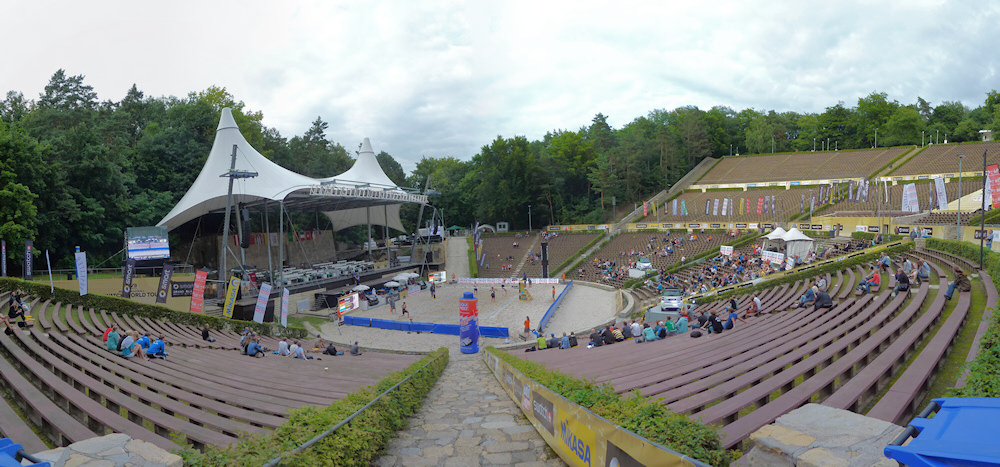

Swatch World Tour 2012 in Berlin
Nach zwei Jahren Pause - zuletzt war 2010 die EM zu Gast - findet endlich wieder ein großes Beachvolleyballturnier in Berlin statt. Die Swatch World Tour trägt einen ihrer Grand Slams in der Waldbühne aus und so kurz vor den Olympischen Spielen sind 31 der 32 weltbesten Beachvolleyball-Duos am Start, um sich für den Saisonhöhepunkt den letzten Schliff zu holen.
In der Woche ist der Eintritt wieder kostenlos, am Wochenende muss jedoch für ein Ticket bezahlt werden. Am Samstag steigt dabei der große Weltrekordversuch, bei dem so viele Zuschauer anwesend sein sollen wie bei keinem Beachvolleyballspiel vorher. Dazu wird ein Rahmenprogramm mit Castingshow und Konzert von Culcha Candela aufgefahren und das Herrenfinale als Night Session ausgetragen. Da das Wetter ab morgen aber fast ausschließlich Regen verspricht wird es schwierig werden, die erforderlichen 18000 Zuschauer in die Waldbühne zu locken.
Mein Wochenende ist mit dem Rock Harz leider schon verplant und so habe ich heute die Gelegenheit genutzt, die beiden letzten Spiele auf dem Centre Court anzusehen. Die Stimmung war aufgrund der wenigen Zuschauer leider nicht so gut wie bei der EM, was auch daran liegt, dass die langsam ansteigenden Zuschauerränge den Schall nicht so bündeln wie das vor zwei Jahren eigens vor der O2 World aufgebaute Stadion. Trotzdem konnte ich zwei deutsche Siege bejubeln, wobei das knappe Ergebnis von Brink und Reckermann Zweifel in mir aufkommen lässt, ob Deutschlands bestes Duo nach den langen Verletzungspausen ausreichend in Form ist, um bei Olympia eine Medaille zu gewinnen. Erdmann/Matysik sahen deutlich souveräner aus, werden in dem hochklassigen Feld aber bald auf Gegner treffen, die nicht so leicht zu knacken sind wie die Russen Prokopiev/Semenov heute.
Wer den Regen nicht scheut sollte auf jeden Fall diese Woche noch zur Waldbühne schauen - wer weiß wann in Berlin wieder Beachvolleyball auf diesem Niveau geboten wird.

(bessere Fotos als von meiner Hosentaschenknipse finden sich auf der Flickr-Seite der Veranstalter)